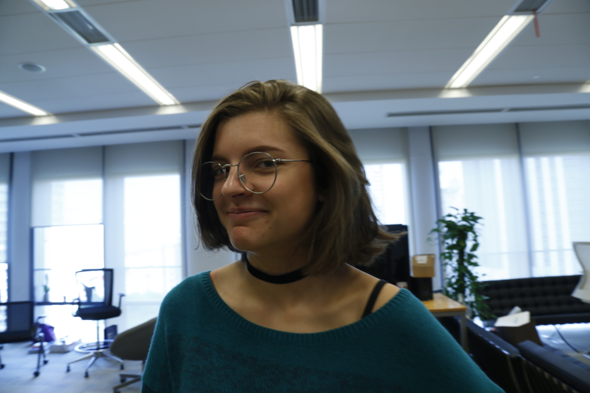
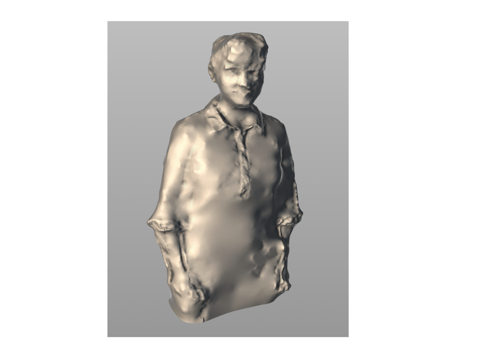
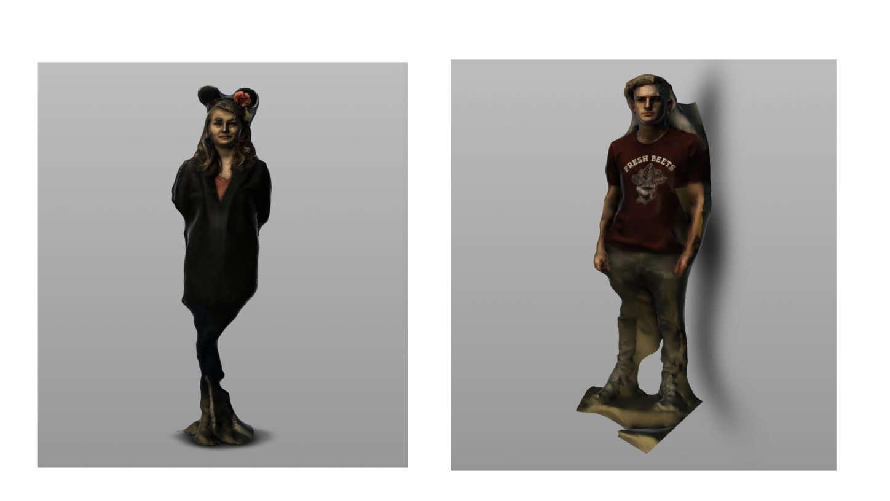
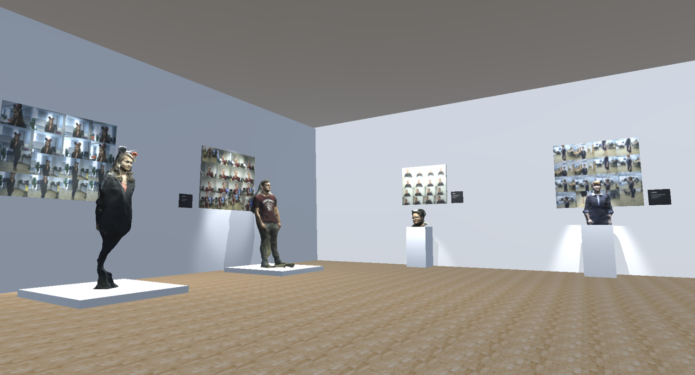
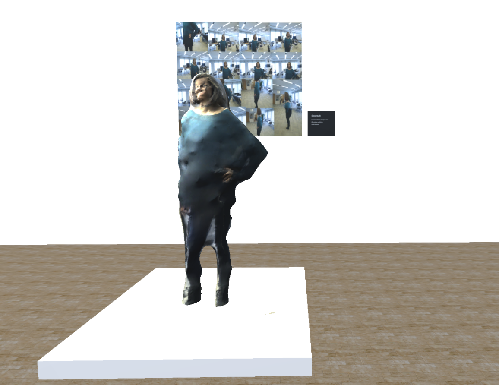

THE MUSEUM OF ANTHROPOCENE
IDEA
This exhibit investigates how an anthropocene museum would look like of what’s left of humans: pictures and data on the internet. The sculptures wouldn’t be perfect but would almost resemble real humans. Is this what’s gonna happen with all the pictures of us on the internet? Is this how we will stay “alive” forever for posterity?
CONCEPT
We were able to decode ancient computer language from the time of humans. We found that an average human was captured on camera 75 times a day including selfies, photos and security cameras of the human world. We also discovered an ancient technique called “photogrammetry”. Photogrammetry is a technique of creating digital 3D objects from about 50-100 pictures of a still object or human, similar number to how many pictures were taken each day of a human in ancient times. We have used this method to recreate physical sculptures of these ancient humans to better experience what it must have been like to be amongst them.
EXPERIENCE
This is a Virtual Reality museum and was designed by photogrammetry using Autodesk software and Unity.
The experience is currently designed for Oculus, room-scale experience
PROCESS
First of all 50-80 pictures were taken of each model while they stood still.

Then these pictures were processed by a software, Autodesk ReCap. A few iterations had to be done for great result.



FINAL PRODUCT
I wanted to create a space that resembled an actual art gallery, so that when the user walks in, they instantly understand it is a museum, even before reading the wall text.

Behing each sculpture , one can observe a collage of the photos it was made from.

Role
Virtual Reality, Unity, Exhibition Design, UX Design, Storytelling